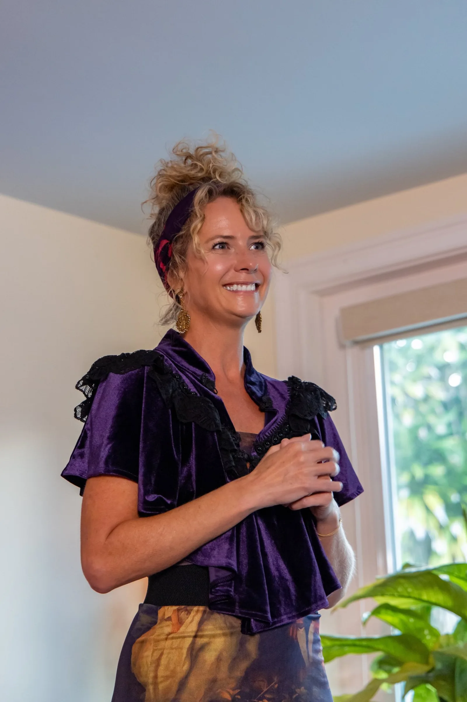

Podcast bio
Your erotic energy is your most powerful resource.
Why weren't you taught how to use it?

Tracy Allyn
Tracy Allyn spent twenty years as a CEO striving to be the leader who walks into chaos and stays grounded, present, and calm enough that others feel safe following her. The leader who could stand in a crowded room without saying a word and draw people toward her, attuned enough to sense and address what her team couldn't express. She was a good student of business leadership, learning from executive education, CEO peer groups like EO and Vistage, and the experts who wrote the books.
She understood cognitively how to be that leader. But it was only as a sex and intimacy coach that she found the tools she had needed to be that CEO.
Most of us were taught that sexual energy is something to be ashamed of, or a mystery that just happens to us. Tracy coaches executives and high performers to work with their erotic energy on purpose. She teaches what no business school does: how the tools used to open the body to pleasure are the same tools that make a great leader.
What she can talk about on air:
The moment a client showed her the connection between great lovers and great leaders
What presence looks like in great leaders like Nelson Mandela and how this is the basis for great sex
What her own lack of attunement cost an employee, and how intimacy work changed that for future employees.
How your capacity to work with your erotic pleasure equates to keeping clear head and a calm body when the stakes are high at work
What five days alone in total darkness taught her about the importance of erotic energy, and why she keeps going back.
How to draw others toward you rather than chasing what you want - in sex and at work.
The best way to practice using your discernment and intuition and how this improves your sex life
Performed authority versus radiated authority: what a room can feel in the difference, and why performed authority is exhausting to maintain.